Mexico¶
Webinars¶
Below you can find videos with a general description of the localization, and how to configure it.
Introduction¶
Odoo Enterprise users in Mexico have free access to a set of modules that allow them to issue electronic invoices according to the specifications of the SAT for version 3.3 of the CFDI, a legal requirement as of January 1, 2018. These modules also add relevant accounting reports (for example, the DIOT), and enable foreign trade, with support for associated customs operations.
With the Mexican location in Odoo you will not only be able to comply with the legal requirements to invoice in Mexico, but also use it as your accounting system, satisfying the normal needs of the market. This makes Odoo the perfect solution to manage your business in Mexico.
Pre requirements¶
Before installing the modules and making the necessary configurations to have the Mexican localization in Odoo, it is necessary to meet the following requirements:
Be registered with the SAT and have an RFC.
Have a Certificate of Digital Seal (CSD).
Choose a PAC and purchase stamps. Currently the Mexican location in Odoo works with the following PACs: Solución Factible, Quadrum (formerly Finkok) and SW Sapien - Smarter Web.
Have knowledge and experience with billing, sales and accounting in Odoo. This documentation contains only the information necessary to enable the use of Odoo in a company based in Mexico.
Modules¶
To install the Mexican localization module, go to , then remove the default
filter "Apps" and search for l10n_mx.
注釈
If you created the database from www.odoo.com and chose "Mexico" as the country when creating your account, some of the Mexican localization modules will have been installed automatically. In that case we observe that some modules have a button that says "Install", while others will instead have a label that says "Installed".
The following modules are necessary for all databases that require Mexican localization:
- Mexico - Accounting (l10n_mx)All the basic data to manage accounting, taxes and the chart of accounts. The installed chart of accounts is based on the SAT account grouping code.
- EDI for Mexico (l10n_mx_edi & l10n_mx_edi_extended)Necessary for electronic transactions, CFDI 3.3, payment complement, and addenda on invoices.
- Odoo Mexican localization reports (l10n_mx_reports & l10n_mx_reports_closing)All mandatory reports for electronic accounting. (Requires the accounting application).
The following modules are optional, and should be installed only if they meet a specific organization requirement. Installing these modules is not recommended unless you are sure they are needed as they add fields that can unnecessarily complicate form filling.
- Odoo Mexico Localization for Stock / Landing (l10n_mx_edi_landing)This module allows managing the requests as part of the shipping costs.
- Odoo Mexican XML Polizas Export (l10n_mx_xml_polizas)With this module, you will be able to export your Journal Entries in XML ready to be uploaded to the SAT.
Configuration¶
Enable electronic invoicing¶
Go to , and make sure that the option Mexican Electronic Invoicing is enabled. With this you will be able to generate the signed invoice and also generate the signed payment complement, all automatically integrated into the normal billing flow in Odoo.

Enter legal information¶
After verifying the general configuration, you must verify that the company is configured with the correct data. To do so, go to , and click on Update information under your company name.

In the resulting form, put your full address (including zip code), RFC (VAT number), and the rest of the data.
重要
From a legal point of view, a Mexican company must use the local currency (MXN). Therefore, Odoo does not provide features to manage an alternative configuration. If you want to manage another currency, let MXN be the default currency and use a pricelist instead.
警告
Make sure that in the address, for the Country field, "Mexico" is chosen from the list of countries that Odoo shows, because if it is entered manually there is a risk of creating a "new country" in the system, which it will result in errors later when the CFDIs are generated.
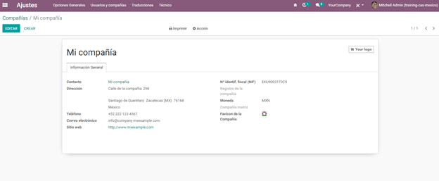ちなみに
If you want to test the Mexican localization, you can configure the company with a real address
within Mexico (including all fields) and add EKU9003173C9 as RFC.
Set the fiscal regime of the company¶
The following is to indicate what is the fiscal regime of the company that we are configuring, which is done through a pre-existing field in Odoo called "Fiscal Regime".
Go to , and select the option that applies to your company from the drop-down list.

ちなみに
For the test environment: Select the option General Law on Legal Persons from the drop-down menu.
Contacts Configuration¶
When creating a contact to be invoiced in Odoo, the following information must be configured for invoice validation: complete address (including postal code, city, state, country, etc.) and the VAT number.

Taxes Configuration¶
A necessary configuration for electronic invoicing to work correctly in Odoo is to add the factor type associated with sales taxes.
To make this configuration you first have to go to .
Within the list of taxes that are pre-loaded, select the option Sales on the filter, this is to see only taxes associated with sales, which are those that are validated for the stamping of invoices. Open the form view of any of the sales taxes, select the Advanced Options tab and within the field Factor Type choose the option Tasa.
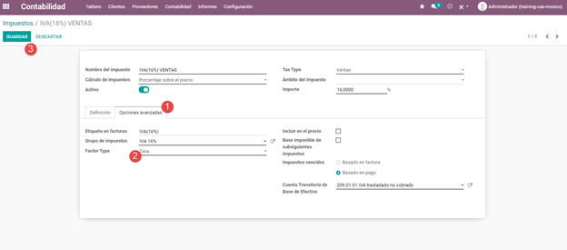Do the same for all the sales taxes that the company needs, either those that come by default in Odoo, or those that you add that are necessary for your company bill.
ちなみに
For the 0% VAT tax, select the option Exento instead of Tasa within the Factor Type field.
When registering a payment, Odoo will carry out the movement of taxes from the Cash Basis Transition Account to the account set in the Definition tab. For such movement, a tax base account will be used ("Base Imponible de Impuestos en Base a Flujo de Efectivo" - do not eliminate this account) in the Journal Entry when reclassifying taxes.
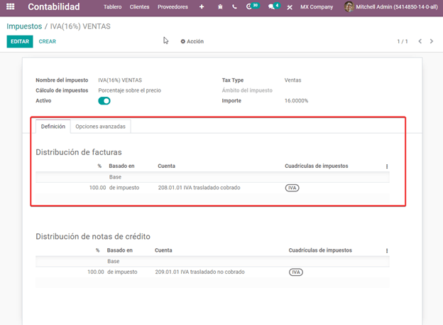Products Configuration¶
All products to be sold need to have the SAT code associated with their classification so that the invoices do not give an error when validating.
To configure products, go to the General Information tab and in the UNSPSC Product Category field select the category that represents that product. The process can be done manually or through a bulk import.
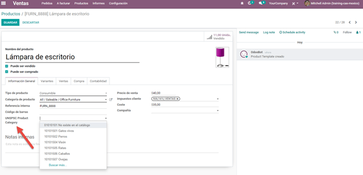PAC Configuration to sign invoices¶
Another important step to configure electronic invoicing in Odoo is to enter the PAC which you are working with and the credentials. That way, electronic invoicing will be enabled.
警告
Remember that you must register directly with the PAC of your choice before you start creating invoices from Odoo. We have the following PACs available: Quadrum, Solución Factible and SW Sapien - Smarter Web.
You must process your Private Key (CSD) with the SAT institution before following these steps. If you do not have this information, try with the Test Credentials and return to this process when you have the SAT Credentials for your production environment to work with real transactions.
To add the credentials, go to . Under the PAC MX section, enter the name of your PAC with your credentials (PAC username and PAC password).
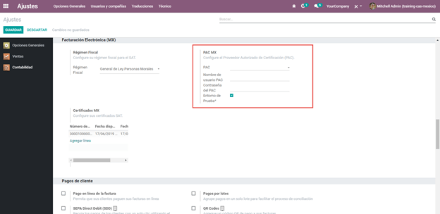ちなみに
If you check the checkbox Test Environment, it is not necessary to enter a PAC username and/or password, but you must select a PAC from the drop-down list.
Finally, upload the digital certificates of the company within the section MX Certificates. Click on Add a line, a window will open, click on Create and from there you can upload your digital certificate, your key and your password. To finish, click on Save and Close.

ちなみに
If you still do not have one of the contracted PACs and you want to test electronic invoicing you can use the following SAT test certificates:
Password:
12345678a
You must also configure the company with a real address within Mexico (including all fields) and
add EKU9003173C9 as the VAT number.
Workflows¶
Electronic invoicing¶
The invoicing process in Odoo is based on Annex 20 version 3.3 of electronic invoicing of the SAT.
To start invoicing from Odoo, an invoice must be created using the standard invoicing flow, that is, either from a sales order or from the invoice menu in the Accounting application.
The invoice will be stamped after clicking on Validate, before that the status is still in draft mode and changes can be made to it. After validating the invoice, you can verify that it was successfully stamped, as it would look like this:
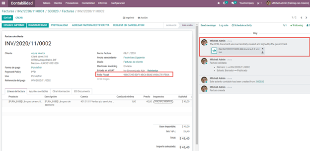The details of the invoice will be reflected in the Chatter, which is what you see on the right of the invoice in the attached image. There you can find your XML sent to the SAT and the status of the stamping, that is, if it was validated or not.
To send the stamped invoice to your client, you can send the XML together with the PDF file directly from Odoo, by clicking the Send and Print button. You can also download the PDF file directly to your computer by clicking the Print button and selecting the desired option.
ちなみに
Depending on the size of the screen, the Chatter can be seen next to or below the document.
Invoicing Special Cases¶
Foreign Trade Invoice¶
The foreign trade invoicing process in Odoo is based on the corresponding SAT regulation. SAT electronic invoicing version is 3.3.
What do we mean when we talk about foreign trade?¶
Since January 2018, the SAT requires a Foreign Trade Supplement in export transactions.
What is the Foreign Trade complement?¶
It is an Annex to the electronic invoice that allows the identification of exporters and importers, in addition to expanding the description of the merchandise sold.
What information can be incorporated in this new complement?¶
Information on the operation type it covers.
Tax identification data of the issuer, receiver or recipient of the merchandise.
Description of the goods to be exported.
Who is obliged to generate it?¶
Taxpayers who carry out export operations of A1 type.
To which exports does the A1 type apply?¶
Entry of goods of foreign origin to remain in national territory for an unlimited time.
Exit of goods from the country to stay abroad for an unlimited time.
Definitive importation of vehicles by diplomatic and consular missions and offices of international organizations and their foreign personnel, in accordance with the import of vehicles in diplomatic exemption.
Is Foreign Trade the same as Pedimentos?¶
Not necessarily, the Pedimentos are directly related to the process of Importing goods, while the Foreign Trade Complement is related to the Exporting process.
Required Modules¶
In order to generate foreign trade invoices, the following modules must be installed.
EDI for Mexico (l10n_mx_edi)

EDI for Mexico (l10n_mx_edi_extended)

Company¶
Configure the company with a valid postal code, and if you have a colony code, this should match with the corresponding Zip Code. At the same time, remember to place the Tax Identification Number (VAT Number - RFC).

Receiving Client¶
Generally it will be a foreign client, in which you must verify that you have at least the following fields completed with the corresponding information.

警告
The customer's delivery address must also contain the zip code.
The format of the foreign VAT (Tax Identification Number) will be validated as appropriate in each Country (Example: Colombia
123456789-1)In the XML, the VAT is automatically replaced by the Generic VAT for abroad transactions:
XEXX010101000
Products¶
At the product level there must also configure some parameters in the following fields.
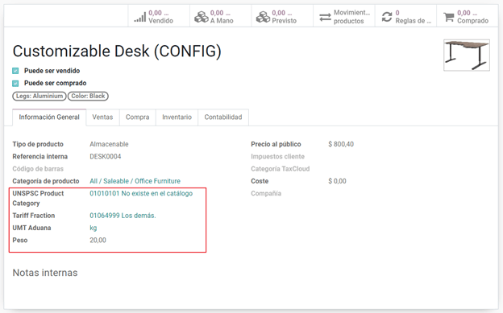 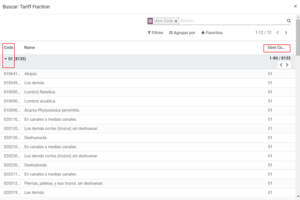警告
You must select the UMT Aduana (Unit of Measure) in KG since it is only accepted by the SAT
The weight refers to the unit weight of the product
The tariff item must be from the code UoM of Kilograms (UoM = 01)
Although the product is sold in pieces or in units, the value that must be registered with customs in the tariff item must be reported in Kilograms.
Invoicing Flow¶
When creating the foreign sales invoice, you must select the Incoterm corresponding and the Need external trade? checkbox must be checked. With this configuration enabled, the PDF and the complement XML of the invoice will have the necessary information to comply with the SAT regulations.
What is the certificate of origin and when is it used?¶
The Certificate Source (or proof of origin) is the document that allows an importer or exporter to prove the country or region from which a good is considered to originate and serves to receive tariff preferences generally agreed in trade agreements.
 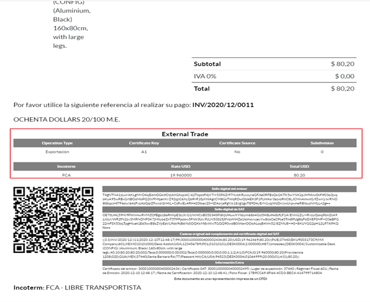
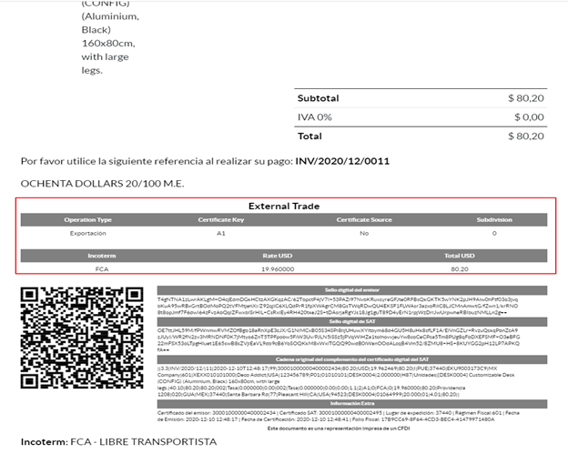
Assign Pedimentos¶
If your company imports products and you need to add the Pedimentos number in your invoices, you can also configure Odoo to record the process.
First, go to , remove the "Apps" filter and search for Mexico, mx or
l10n_mx. Then, install Odoo Mexico Localization for Stock / Landing module
(l10n_mx_edi_landing).

ちなみに
The l10n_mx_edi_landing module depends on the Inventory and Sales apps, since the products must be entered into inventory to be able to add their Pedimentos number to the corresponding receipt of products.
Then, go to . Within the options, activate Landed Costs. This option will allow adding the Pedimentos number to the corresponding product receptions.

ちなみに
In order to use landed costs, the accounting configuration of the inventory valuation of the products must be configured as Automated and its costing method Average or FIFO (first in, first out).
To associate the Pedimentos number indicated with an import (merchandise reception) a new Landed Cost must be created. They can be accessed through . There you will find the option to attach the Pedimentos number.
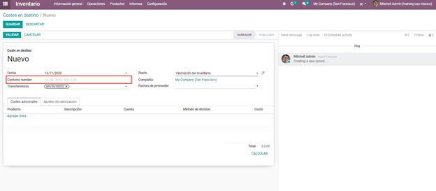警告
You can only add the Pedimentos number once, so be careful when associating the correct number with the transfer(s).
Payment Terms¶
The Payment Terms are already configured in Odoo when installing the Mexican localization, this means that if you go to , you will find the default list in Odoo.

In Mexico you can have 2 types of payments: PPD or PUE. These are given by the Payment Term chosen (or if there is no chosen payment term it will be based on the due date of the invoice).
PPD Payments¶
To configure PPD payments (payment in installments or deferred) it is only necessary to choose a date expiration date for your invoice and Odoo will detect if it is after the first day of the following month (in this case no payment term is set - with the payment term you can also stipulate if it will be PPDo PUE).
PUE¶
To configure PUE payments (payment in a single payment) you must select an invoice due date within the same month or choose a payment term that does not imply changing the due month (immediate payment, 15 days, 21 days, all falling within the current month).
Payments¶
According to the SAT documentation, there may be 2 types of payments: PUE or PPD. In both cases the payment process in Odoo is the same, the difference of whether the payment is PUE or PPD lies in the payment term of the invoice - as indicated in the previous point in the Payment Terms.
If the payment is a PPD type, Odoo will generate the corresponding payment complement automatically when you Confirm it. If the payment is PUE, the payment complement will not be generated. The type of payment is visible from the invoice in the field called Payment Policy and takes the invoice date and the due date as parameters.

When configuring the contacts that will be used when making payments, you must configure the banks in the Accounting tab, place both the Bank, Account Number and CLABE.

Register PPD Payments¶
If at the time of registering a payment it is of type PPD then a Payment Complement (XML) will be generated with its details.
The payment can be registered from the invoice and once it is confirmed, the invoice will be paid and with its payment associated.
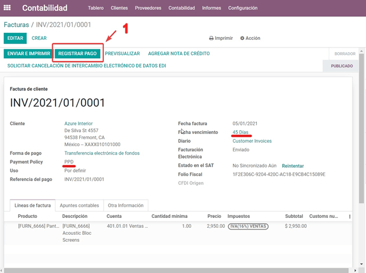
注釈
The journal will be the payment method where you receive or send the payment from. You must also associate a Payment Way and a Recipient Bank Account (this last one must be created within the contact associated with the invoice).
Once the payment is made, it will be associated with the corresponding invoice and its status will be In Payment since the payment will be effectively validated when it is bank reconciled.

注釈
The Recipient Bank Account is the one attached to the Accounting tab in the contact associated with the invoice, it must be valid so that the stamped payment complement can be created.
警告
When making a payment in MXN for an invoice in USD, the payment must be created using the Register Payment button on the invoice view and not separately as a payment. Otherwise, the payment CFDI is not correctly generated.
As such, a payment in MXN cannot be used to pay multiple invoices in USD. Rather, the payment should be separated into multiple payments created using the Register Payment button on the corresponding invoices.
Register PUE Payments¶
If at the time of registering a payment it is of the PUE type then in this case a Payment Complement (XML) will not be generated since it is not necessary.
The payment can be registered from the invoice and once it is confirmed, the invoice will be paid and with its payment associated.
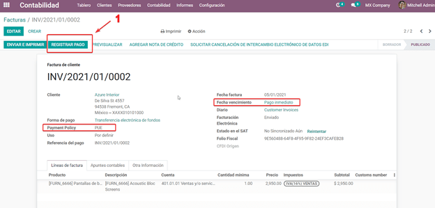 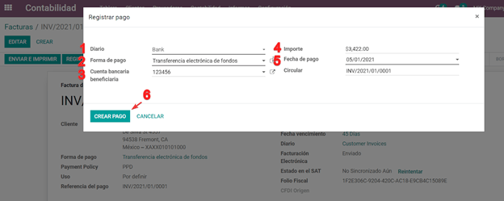 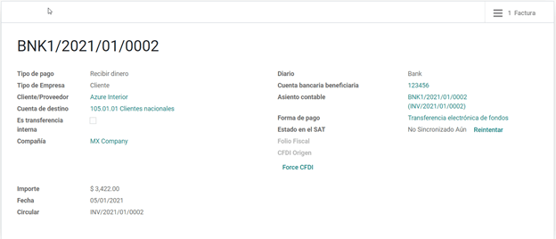注釈
In this case it is not created as a payment supplement by the nature of it.
Down Payments¶
This is a special case in which we must receive an advance payment from a client to later be applied to an invoice.
Process to create advance in Mexico¶
Issuance of electronic invoicing with the amount of the advance payment received.
Issuance of the electronic invoice for the total value of the operation (full invoice). (CFDI Origin: 07 | Advance invoice, point 1)
Issuance of the electronic invoice with the Egreso type. (CFDI Origin: 07 | Invoice_total, point 2)
Steps to follow in Odoo¶
Preparation: Create the product
Down Payment issuance of the electronic invoice for the amount of the advance payment received
Issuance of the electronic invoice for the total value of the operation
Add a credit note from the down payment invoice
Preparation: Create the Product¶
The Down Payment product must be type Service and must use the NSPSC Product Category: 84111506 Servicios de facturación.
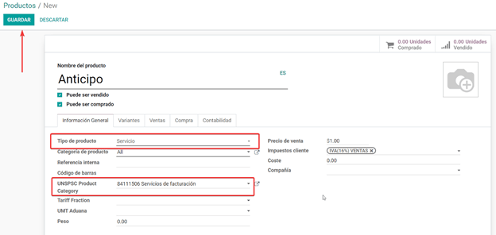Add the down payment product as default to be used from the Odoo configurations.

Issuance of the electronic invoice for the value of the advance received¶
Create the Advance Payment Invoice: From the sales order, create an advance payment invoice for the percentage of the purchase to be paid in advance (or for a fixed amount).
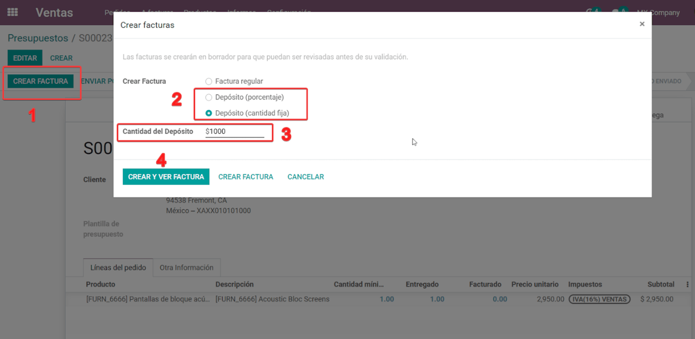Validate invoice with the down payment product.
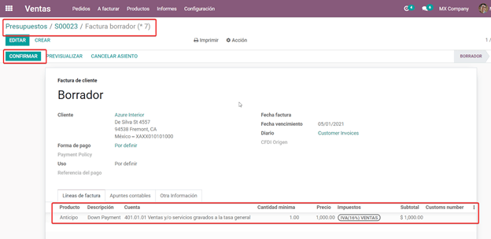 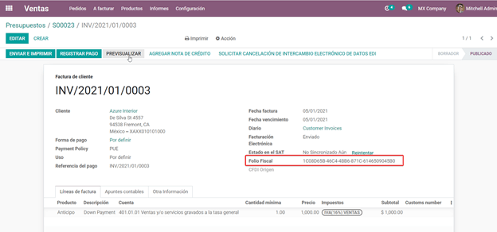Register Payment to the advance payment invoice.


Issuance of the electronic invoice for the total value of the operation.¶
From the sales order, create an invoice for the total, that is, for all the order lines without discounting the advance.
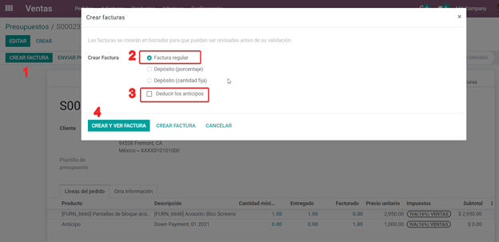注釈
Remove the check mark from the Deduct down payments field.
Add the original CFDI of the advance payment invoice by adding 07 | at the beginning + Folio
Fiscal of the advance payment Invoice created in the previous step.
Copy the Folio Fiscal of the following invoice following this example:

And paste it in the draft invoice created from the Sales Order without deducting the advances:

Validate and copy the Folio Fiscal for later (in the example the Folio Fiscal copy is: 50E4FF06-4341-4006-A7C3-A7F653CBEFAE )
Add credit note from invoice¶
Create a Credit Note from the down payment invoice (the corrective invoice must be edited prior to confirming it, see explanation below the 2 following images)
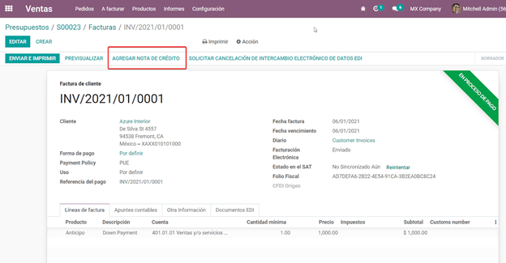
Before you Confirm the Credit Note, edit the Origin CFDI with 07 | XXX instead of the prefix
01 | XXX


Now the invoice can be confirmed.
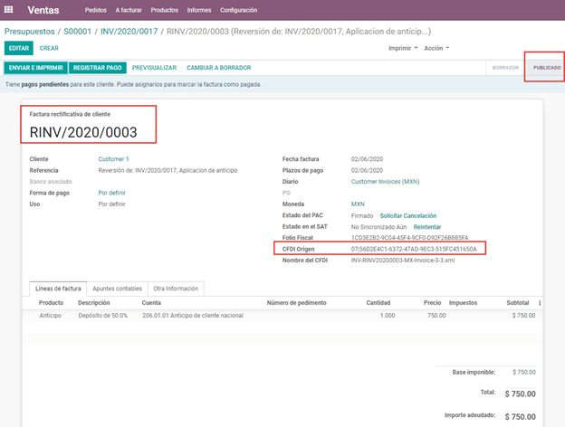Now the Credit Note (Advance Payment) must be applied to the total invoice, this is added at the bottom below the amount owed.
 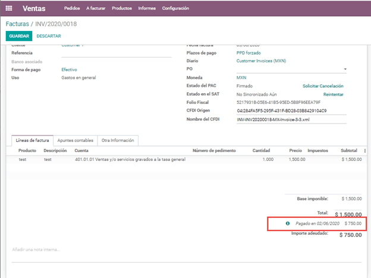
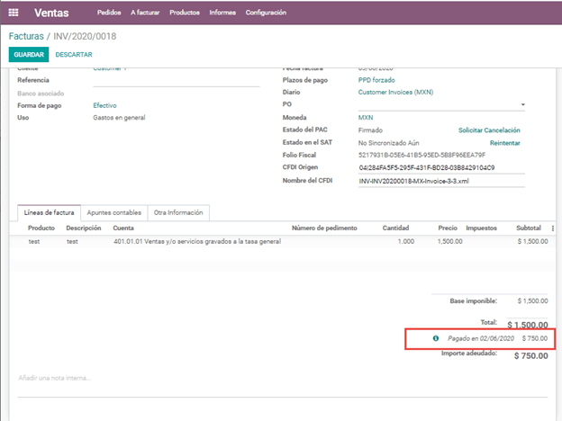
Register a payment for the difference of the down payment and the total of the sale.

If you go to the XML of the invoice, you should see in CFDI related the type of relationship 07 and the Folio Fiscal of the advance payment invoice.
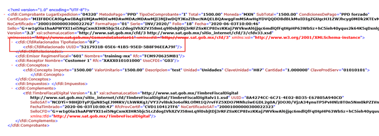Discounts based on payment days¶
Cash discounts are incentives that you can offer to motivate customers to pay within a specified time period. For example, you offer a 2% discount if the customer pays you within the first 5 days of the invoice, when it is due in 30 days. This approach can greatly improve your average customer payments period.
Create and assign the corresponding Payment Term
Register the Payment within the days of the discount
Create a credit note
Create and assign the corresponding Payment Term¶
To configure the discount for advance payment, go to and click on Create. Add a Percentage type with a corresponding value (for example, 98% of the total price for a 2% discount) and the number of days for which the offer is valid (for example 5 days). You can also change the balance due type if necessary (in this example 30 days).
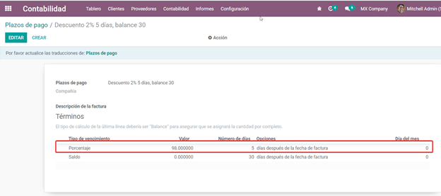Then when creating our Sales Order or Sales Invoice, assign the Payment Term created previously.

Register the Payment within the days of the discount¶
Register the payment within the days in which the application of the discount was specified, in our case it is within 5 days after the creation of the Sales Invoice.
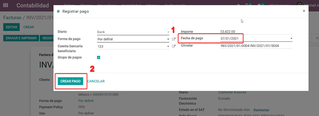Then go to the bottom of the invoice where the totals are located and there you will see 2 payments created, reset to draft and cancel the payment that does not correspond - the one related to the discount.
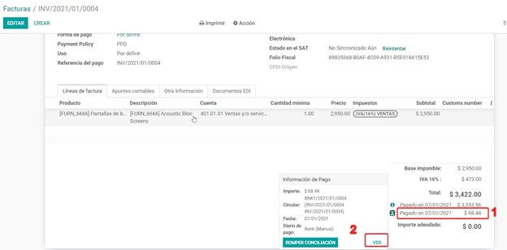

Create a credit note¶
Finally to close the cycle we must close the invoice, but as in this case we apply a discount, to close it correctly we must create a credit note specifying that the difference was given to the customer on a Credit Note.


Adjust the amount to the remaining balance in the original invoice.
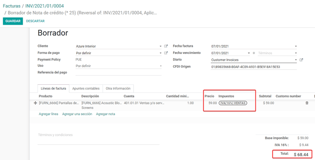Add the Credit Note to the original invoice so that it is settled.
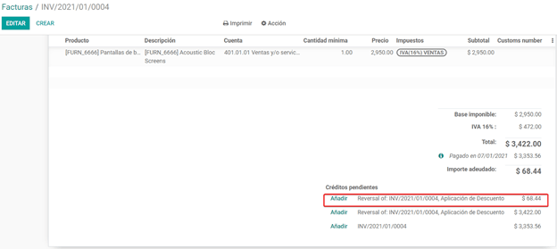Cancellation of invoices¶
Before 72 Hours¶
If it is necessary to cancel an invoice validated and sent to the SAT in less than 72 hours follow the steps below.
Request Cancellation

The status of the Electronic invoicing changes to Cancelled
Click on RESET TO DRAFT

Click on CANCEL ENTRY

After 72 Hours¶
If It is necessary to cancel an invoice validated and sent to the SAT more than 72 hours, the client must be asked to accept the cancellation, for this the following steps must be followed.
Click on Request EDI Cancellation to inform the SAT that you want to cancel the invoice, in this case the client has to enter the SAT webpage and approve it. (The status of the Electronic invoicing field in Odoo changes to To Cancel)
When the client (Receiver / Customer) approves the Cancellation in their SAT portal it is now possible to Change the invoice to Draft and then click on Cancel entry.
Odoo synchronizes with the SAT to update the status of the Electronic invoicing with a scheduled action, Invoices canceled in the SAT will be canceled in Odoo.
After clicking on Request EDI cancellation, the status of the Electronic invoicing field will be To Cancel but the status of the SAT will be the same to Valid, it will remain active until the end customer / Recipient approves the cancellation in the SAT.

Once canceled in the SAT, Odoo will synchronize the status of the SAT through scheduled actions that are executed every day to synchronize the statuses of the SAT, Electronic invoicing and Odoo (this scheduled action can be executed manually by entering with developer mode).
If the invoice is canceled in the SAT, in Odoo it is also canceled, which allows you to switch the invoice to draft and finally cancel the invoice (cancel entry).
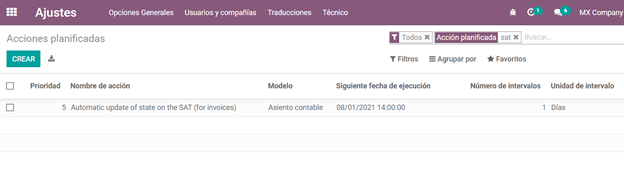Cancel Paid Invoices¶
If the invoice has already been paid, a credit note must be created from the invoice so that the originating CFDI is recognized and later cancel the original invoice.


Cancel Invoices from the previous period¶
Problem¶
If the invoice is from the previous month and the period is closed, the income has already been declared in Financial Reports and to the government. In Odoo, when canceling an invoice, the journal entry is eliminated as if the income already reported had not existed, this represents a fiscal problem because the income was already declared in the previous month.
The problem resides when the fiscal period has been closed, in the current period you have to make the reverse entry and save the cancellation information.
Invoice to be canceled
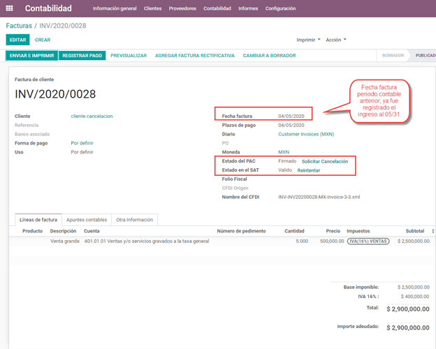This is how the Balance Sheet looks like:

If the invoice is canceled, the journal entry and the Balance Sheet looks like this after canceling:
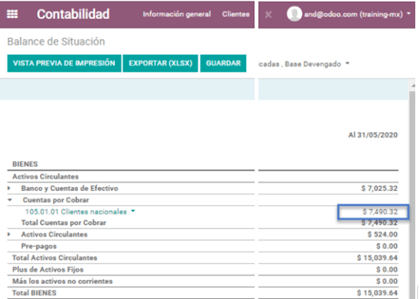Solution¶
Close the fiscal period every month (Best Practice Mexican Localization)
Cancel invoice in SAT
Create a Manual Reversion entry (Journal Entry)
Reconcile the open invoice with the reversal entry (Journal Entry)
Change Electronic invoicing status to Cancelled with server action
Close accounting period each month (Best Practice Mexican Localization)¶
If the accounting period is closed due to the blocking dates, Odoo will not allow to modify or add accounting entries of a date corresponding to that accounting period.
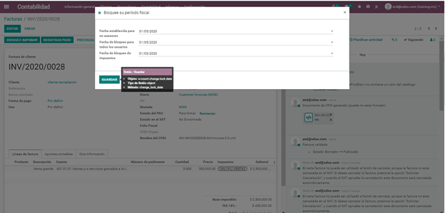Cancel invoice in the SAT¶
If the accounting period is closed, and the invoice was canceled in the SAT, the status in Odoo will be published while the Electronic invoicing status will be Sent and the SAT status is Cancelled.

Create Manual Reversal Journal Entry¶
The solution is to create the reversal journal entry manually dated in the current fiscal period and reconcile the open invoice with the reversion created manually.
It must be clearly indicated in the reference that it is a cancellation (you can use a cancellation account for invoices from previous periods such as Other Income).
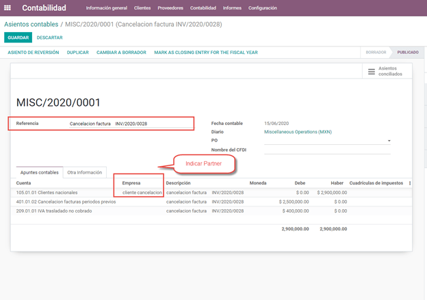Reconcile the open invoice with the reversal entry¶


In the Balance Sheet and Trial balance they are now with the correct balances.
 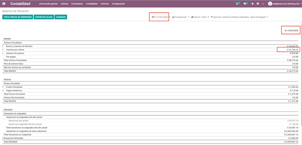
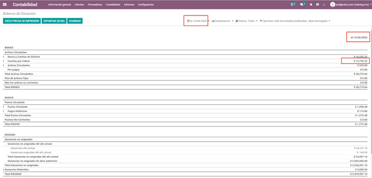

Change status of Electronic invoicing to Cancelled with server action¶
A server action can be created that modifies the status of the invoice to Cancelled once it is reconciled with the reversal entry (You should check this with support or with your Assigned Functional Consultant prior to performing this action).
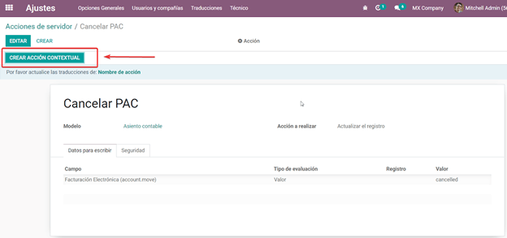
Electronic Accounting¶
Accounting for Mexico in Odoo is composed of 3 reports:
Electronic Chart of Accounts (Called and displayed as COA).
Electronic Trial Balance.
DIOT report.
1. and 2. are considered electronic accounting, and DIOT is a report only available in the context of accounting.
You can find all of those reports in

Electronic Chart of Accounts (Called and displayed as COA).¶
Electronic invoicing has never been so easy, just go to and click the button Export for SAT (XML).

How to add new accounts ?¶
If you add an account with the NNN.YY.ZZ encoding convention where NNN.YY is a SAT encoding group, your account will be set up automatically.
Example to add an Account for a new Bank account go to and then create a new account in the «Create» button and try to create an account with the number 102.01.99 once you change to establish the name you will see an automatically configured label, the configured labels are the ones chosen to be used in the COA in XML.
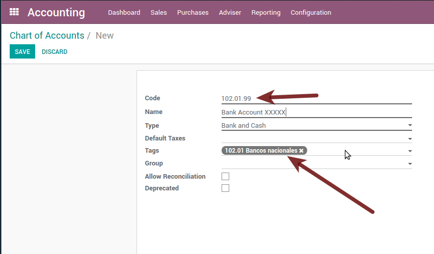Trial Balance¶
Exactly like the COA but with the credit and debit of the initial balance, once you have correctly configured your COA, you can go to this is automatically generated and can be exported to XML using the button on the top Export for SAT (XML) with the previous selection of the period you want to export.

All normal analysis and listed functions are available here as well as any normal Odoo Report.
DIOT Report (Requires Accounting App)¶
What is DIOT and the importance of presenting it SAT¶
When it comes to procedures with the SAT Administration Service, we know that we should not neglect what we present.
The DIOT is the Informative Declaration of Operations with Third Parties (DIOT), which is an additional obligation with VAT, where we must give the status of our operations to third parties, or what is considered the same, with our suppliers.
This applies to both individuals and Personas Morales, so if we have VAT to present to the SAT and also deal with suppliers it is necessary to send the DIOT.
When to file the DIOT and in what format ?¶
It is easy to present the DIOT, since, like all formats, you can obtain it on the SAT page, it is the electronic form A-29 that you can find on the SAT website.
Every month if you have operations with third parties, it is necessary to present the DIOT, as we do with VAT, so if in January we have deals with suppliers, by February we must present the information relevant to said data.
Where is DIOT presented?¶
You can present DIOT in different ways, it is up to you which one you will choose and which one will be more comfortable for you since you will present it every month or every time you have dealings with suppliers.
The A-29 form is electronic so you can present it on the SAT page, but this after having made up to 500 registrations.
Once these 500 records have been entered in the SAT, you must submit them to the Local Taxpayer Services Administration (ALSC) with correspondence to your tax address, these records can be submitted on a digital storage medium such as a CD or USB, which a Once validated, they will return you, so do not doubt that you will still have these discs and of course, your CD or USB.
One more thing to know: batch loading?¶
When reviewing the official SAT documents in DIOT, you will find the Batch load, and of course the first thing we think is what is that ?, and according to the SAT site it is:
The "batch load" is the conversion of databases from records of transactions with suppliers made by taxpayers in text files (.txt). These files have the necessary structure for their application and import into the Informative Declaration of Operations with third parties system, avoiding direct capture and consequently, optimizing the time invested in their integration for the presentation in time and form to the SAT.
You can use it to present the DIOT, since it is allowed, which will facilitate this operation, so that it does not exist to avoid being in line with the SAT in regards to the Informative Declaration of Operations with Third Parties.
How to generate this report in Odoo?¶
Go to .
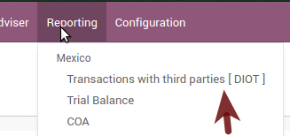A report view is displayed, select the last month to report the immediately preceding month or leave the current month if it suits you.

Click on Export (XLSX) or Print (TXT)

Save the downloaded file in a safe place, go to the SAT website and follow the necessary steps to declare it.
Important considerations about your supplier and invoice data for DIOT¶
All suppliers must have the fields configured in the accounting tab called "DIOT Information", the L10N MX Nationality field is completed by simply selecting the appropriate country in the address, not You need to do nothing else there, but the l10n MX type of operation must be configured in all your providers.
There are 3 VAT options for this report, 16%, 0% and exempt, one invoice line in Odoo is considered exempt if there is no tax on it, the other 2 taxes are already configured correctly.
Remember that to pay an invoice that represents a prepayment, you must first request the invoice and then pay it and properly reconcile the payment following the standard Odoo procedure.
You do not need to fill in all your partner data to try to generate the supplier invoice, you can correct this information when you generate the report.
Remember that this report only shows vendor invoices that were actually paid.
If some of these considerations are not taken into account, a message like this will appear when you generate the DIOT in TXT with all the partners you need to verify this particular report, this is the reason why we recommend to use this report not only for exporting your legal information. obligation, but generate it before the end of the month and use it as your auditory process to see that all your partners are configured correctly.

Closing Fiscal Period in Odoo¶
Before proceeding to the close of the fiscal year, there are some steps that you should normally take to ensure that your accounting is correct, updated and accurate:
Make sure that you have fully reconciled your bank account (s) through the end of the year and confirm that the closing book balances match the balances on your bank statements.
Verify that all customer invoices have been entered and approved.
Confirm that you have entered and approved all vendor bills.
Validate all expenses, ensuring their accuracy.
Check that all payments received have been entered and recorded exactly.
Year-end checklist¶
Run a Tax Report, and verify that your tax information is correct.
Reconcile all accounts on your Balance Sheet
Compare your bank balances in Odoo against the current bank balances on your statements. Use the report Bank Reconciliation to help you with this.
Reconcile all cash and bank account transactions by running your Old Accounts Receivable and Old Accounts Payable reports
Audit your accounts, making sure you fully understand the transactions that affect them and the nature of the transactions, making sure to include loans and fixed assets.
Run the optional function Payments Matching, under the More drop-down on the Journal options from the Accounting dashboard, validating any Vendor Bill and Customer Invoices with its payments. This step is optional, however it can assist the year-end process if all pending payments and invoices are reconciled, and it can lead to finding errors or mistakes in the system.
Your accountant will probably like to check your items in the balance sheet and do some Journal Entries for:
Manual year-end adjustments, using the Journal Audit report (For example, the Current Earnings for the Year and Retained Earnings reports).
Work in Progress.
Depreciation Journals.
Loans.
Tax Adjustments.
If your accountant is on the year-end audit, they will want to have copies of the balance sheet items (such as loans, bank accounts, prepayments, sales tax reports, etc ...) to compare against. your balances in Odoo.
During this process, it is a good practice setting the Closing Date for Non-Advisers to the last day of the preceding financial year, which is set under the accounting settings. In this way, the accountant can trust that no one else is changing the previous year's transactions while auditing the books.
Accounting Closing Process¶
In Odoo there is no need to make a specific year-end entry to close the reporting income accounts . The result of the exercise is automatically calculated in the account type (Current Year Earnings) and the difference between Income - Expenses will be accumulated to calculate it.
The reports are created in real-time, which means that the Income Report corresponds directly to the closing date of the year that you specify in Odoo. In addition, at any time that you generate the Income Report, the start date will correspond to the start date of the Fiscal Year and the account balances will all be 0.
As of December 31, the Balance Sheet shows the earnings of the Current Year that do not have been recognized (Account type Total Current Year Unallocated Earnings in MX account 305.01.01 ['current year earnings' type])

The accountant should create a Journal Entry to recognize the result of the year in Accumulated Earnings from previous years on the account "previous years results" account (304.01.01 in Mexico) - that is an equity account.
After posting the Journal Entry, click on Mark as Closing Entry for the Fiscal Year. This step is important because it is linked to the Trial Balance report. If this Journal Entry is not marked as a Closing Entry, the Trial Balance won't be correct.
The simplified accounting entry would look like this:
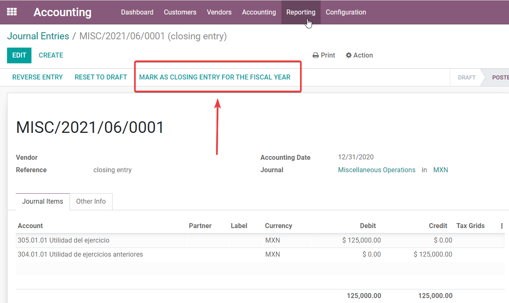Once the accountant has created the journal entry to locate the Current Earnings for the Year, they must set the Closing Date to the last day of the fiscal year. Making sure that before doing this, whether or not the current gain of the year in the Balance Sheet is properly reporting a balance 0.
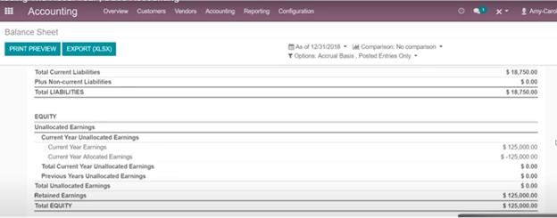Extra Recommended features¶
Contacts App (Free)¶
If you want to properly manage your customers, suppliers and addresses, this module, even if it is not a technical need, it is highly recommended to install it.
Multi-currency (Requires Accounting application)¶
In Mexico, almost all companies send and receive payments in different currencies. If you want to do this you can enable the use of multi-currency. You should also enable synchronization with the Mexican Bank Service, as this would allow you to automatically have the exchange rate from the SAT without having to manually create this information every day in Odoo.
Go to settings and enable the multi-currency feature.

Enabling Explicit errors on the CFDI using the XSD local validator (CFDI 3.3)¶
Frequently you want receive explicit errors from the fields incorrectly set on the xml, those errors are better informed to the user if the check is enable, to enable the Check with xsd feature follow the next steps (with the developer mode enabled).
Go to
Look for the Action called "Download XSD files to CFDI"
Click on button "Create Contextual Action"
Go to the company form
Open any company you have.
Click on "Action" and then on "Download XSD file to CFDI".

Now you can make an invoice with any error (for example a product without code which is pretty common) and an explicit error will be shown instead a generic one with no explanation.
注釈
If you see an error like this:
The cfdi generated is not validattribute decl. 'TipoRelacion', attribute 'type': The QName value
'{http://www.sat.gob.mx/sitio_internet/cfd/catalogos}c_TipoRelacion' does
not resolve to a(n) simple type definition., line 36This can be caused by a database backup restored in another server, or when the XSD files are not correctly downloaded. Follow the same steps as above but:
Go to the company in which the error occurs.
Click on Action and then on Download XSD file to CFDI.
Common problems and errors¶
Error messages (Only applicable on CFDI 3.3):
9:0:ERROR:SCHEMASV:SCHEMAV_CVC_MINLENGTH_VALID: Element '{http://www.sat.gob.mx/cfd/3}Concepto', attribute 'NoIdentificacion': [facet 'minLength'] The value '' has a length of '0'; this underruns the allowed minimum length of '1'.9:0:ERROR:SCHEMASV:SCHEMAV_CVC_PATTERN_VALID: Element '{http://www.sat.gob.mx/cfd/3}Concepto', attribute 'NoIdentificacion': [facet 'pattern'] The value '' is not accepted by the pattern '[^|]{1,100}'.
Solution: You forgot to set the proper "Reference" field in the product, please go to the product form and set your internal reference properly.
Error messages:
6:0:ERROR:SCHEMASV:SCHEMAV_CVC_COMPLEX_TYPE_4: Element '{http://www.sat.gob.mx/cfd/3}RegimenFiscal': The attribute 'Regimen' is required but missing.5:0:ERROR:SCHEMASV:SCHEMAV_CVC_COMPLEX_TYPE_4: Element '{http://www.sat.gob.mx/cfd/3}Emisor': The attribute 'RegimenFiscal' is required but missing.
Solution: You forgot to set the proper "Fiscal Position" on the partner of the company. Go to customers, remove the customer filter and look for the partner called as your company and set the proper fiscal position which is the kind of business your company does related to SAT list of possible values, another option can be that you forgot to follow the considerations about fiscal positions.
You need to go to Fiscal Position settings and set the proper code (it is the first 3 numbers of the name), for example, for the test, you need to set 601, it will look like the picture.

ちなみに
For testing purposes this value must be set to
601 - General de Ley Personas Moraleswhich is the one required for the VAT demo.Error message:
2:0:ERROR:SCHEMASV:SCHEMAV_CVC_ENUMERATION_VALID: Element '{http://www.sat.gob.mx/cfd/3}Comprobante', attribute 'FormaPago': [facet 'enumeration'] The value '' is not an element of the set {'01', '02', '03', '04', '05', '06', '08', '12', '13', '14', '15', '17', '23', '24', '25', '26', '27', '28', '29', '30', '99'}
Solution: The payment method is required on your invoice.
Error messages:
2:0:ERROR:SCHEMASV:SCHEMAV_CVC_ENUMERATION_VALID: Element '{http://www.sat.gob.mx/cfd/3}Comprobante', attribute 'LugarExpedicion': [facet 'enumeration'] The value '' is not an element of the set {'002:0:ERROR:SCHEMASV:SCHEMAV_CVC_DATATYPE_VALID_1_2_1: Element '{http://www.sat.gob.mx/cfd/3}Comprobante', attribute 'LugarExpedicion': '' is not a valid value of the atomic type '{http://www.sat.gob.mx/sitio_internet/cfd/catalogos}c_CodigoPostal'.5:0:ERROR:SCHEMASV:SCHEMAV_CVC_COMPLEX_TYPE_4: Element '{http://www.sat.gob.mx/cfd/3}Emisor': The attribute 'Rfc' is required but missing.
Solution: You must configure your company address correctly, this is a mandatory group of fields, you can go to your company configuration in and fill complete all the mandatory fields for your address by following the steps in this section: Enter legal information.
Error message:
2:0:ERROR:SCHEMASV:SCHEMAV_CVC_DATATYPE_VALID_1_2_1: Element '{http://www.sat.gob.mx/cfd/3}Comprobante', attribute 'LugarExpedicion': '' is not a valid value of the atomic type '{http://www.sat.gob.mx/sitio_internet/cfd/catalogos}c_CodigoPostal'.
Solution: The postal code of your company address is not valid for Mexico, please correct it.
Error messages:
18:0:ERROR:SCHEMASV:SCHEMAV_CVC_COMPLEX_TYPE_4: Element '{http://www.sat.gob.mx/cfd/3}Traslado': The attribute 'TipoFactor' is required but missing.34:0:ERROR:SCHEMASV:SCHEMAV_CVC_COMPLEX_TYPE_4: Element '{http://www.sat.gob.mx/cfd/3}Traslado': The attribute 'TipoFactor' is required but missing.", '')
Solution: Set the Mexican name for the 0% and 16% tax in your system and use it on the invoice. Your tax, which represents 16% VAT and 0%, must have the Factor Type field set to Tasa.
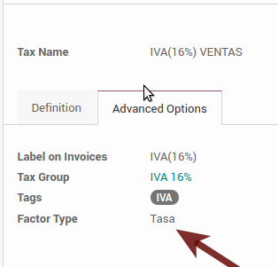
Error messages:
CCE159The XXXX attribute must be registered if the key of cce11: ComercioExterior: TipoOperacion registered is '1' or '2'.
Solution: It is necessary to specify the Incoterm.
Error messages:
CCE209The attribute cce11: Foreign Trade: Goods: Goods: Customs Unit must have the value specified in the catalog catCFDI: c_FraccionArancelaria column 'UMT' when the attribute cce11: Foreign Trade: Goods: Me
Solution: The Tariff Fraction must have the code of the unit of measure 01, corresponding to Kilograms.
Glossary¶
CFDI: Online Digital Tax Receipt
CSD: Digital Seal Certificate
PAC: Authorized Certification Provider
Stamp: Digital signature of the electronic invoice
Addenda: Complement of information that can be attached to an Internet Digital Tax Receipt (CFDI) normally required by certain companies in Mexico such as Walmart, Tiendas Sorianas, etc.
UUID: It is the acronym in English of the Universally Unique Identifier. The UUID is the equivalent of Folio Fiscal, it is composed of 32 hexadecimal digits, shown in 5 groups separated by hyphens.
LCO: List of Obliged Taxpayers (LCO) is a list issued by the SAT that accounts for all the taxpayers whom it authorizes the issuance of invoices and payroll receipts. This means that, to be able to electronically bill your clients, you must be in this database.